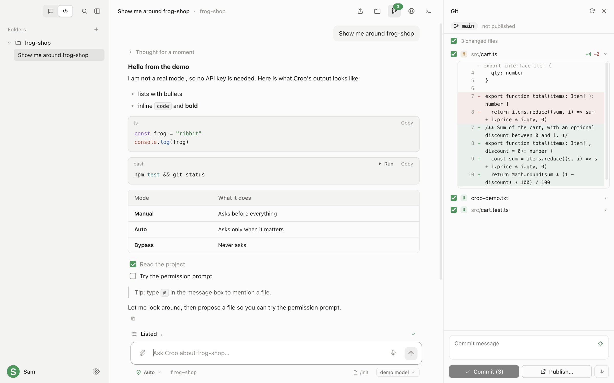
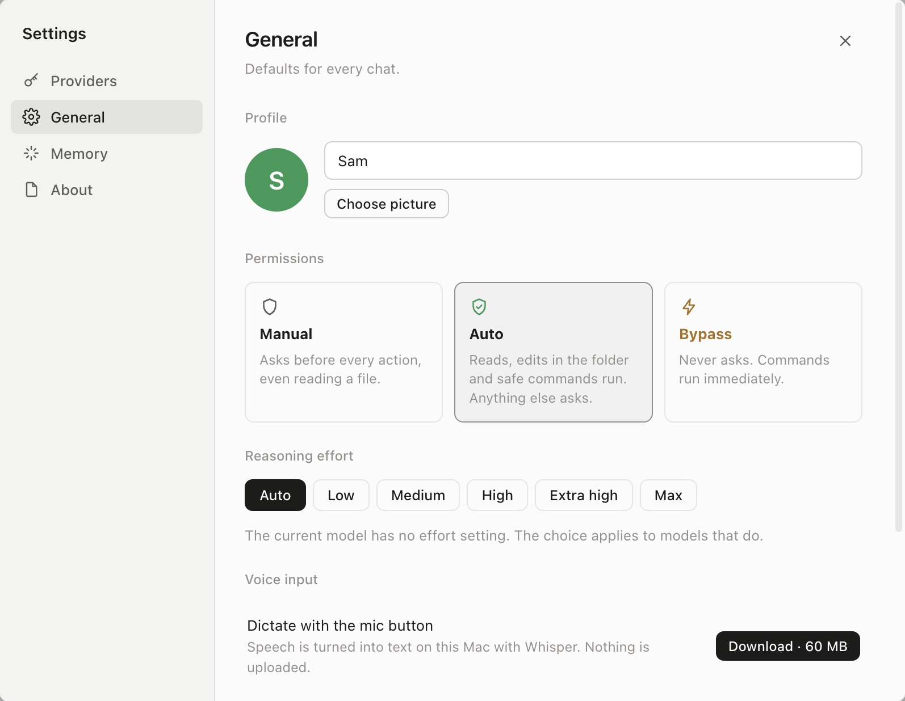

A coding agent
with a frog in it.
Croo is a small, quiet Mac app for working with AI on your code. Bring your own key or run a model on your Mac. You decide what it may do on its own, and you see everything it does.
curl -fsSL https://ai.crooli.com/install.sh | bash
Paste it into Terminal. It installs the latest version and opens it, with no “damaged app” warning to click through. Other ways to install

Everything for working on code, in one calm window.
- You set the leash
- Manual asks before every action. Auto reads, edits and runs safe commands, and asks about the rest. Bypass never asks.
- Git, built in
- Inline diffs for every change, pick what to commit, and push. AI-written commit messages, and one click to publish a new repo to GitHub.
- Run it from the chat
- Shell, Python and Node snippets get a Run button. Output streams in under the code with the exit code and timing.
- Terminal, files, browser
- A real shell, a file tree with a viewer, and a small browser for previewing what you build, all beside the chat.
- See it think
- Reasoning streams into a row you can open. A clock, token count and cost estimate run while it works.
- Attach, mention, speak
- Paste screenshots, drop files, type
@to pull in a file, or dictate with the mic. Speech is transcribed on your Mac. - Find anything
- ⌘K searches chats by what was said, files by name, and actions. Edit any message and resend.
- Chat or Code
- Code mode gives each folder its own chats and tools. Chat mode is a plain conversation that remembers what you tell it.
Your key. Your model. Your Mac.
Use Claude, GPT, Gemini or anything that speaks the OpenAI API. Or download a model and run it on your Mac, free and offline, with nothing to sign up for.
Keys are encrypted in your keychain and only ever sent to the provider you pick.
Claude · OpenAI · Gemini · Ollama · OpenRouter · Groq · DeepSeek · Mistral · xAI · Together · LM Studio · llama.cpp · vLLM · any OpenAI-compatible URL
- No account. Nothing to sign up for.
- No telemetry. It never phones home.
- No backend. Chats and keys stay on your Mac.

Get Croo
Install from Terminal
RecommendedOne line installs the latest Croo into Applications and opens it. Croo isn’t notarized by Apple yet, and this way skips the “damaged app” warning that browser downloads get.
curl -fsSL https://ai.crooli.com/install.sh | bash
Download the app
A disk image for Apple Silicon Macs. If macOS says Croo is “damaged” after opening it, it isn’t: run xattr -cr /Applications/Croo.app once.
Build from source
Needs Node 20 or later. Builds the same app the releases ship.
git clone https://github.com/xandertaylorx/croo && cd croo && npm i && npm run dist